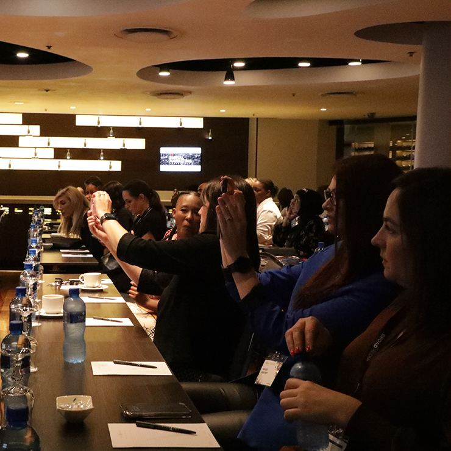

Conferences · Tech
MyBroadband ICT Conference 2027
- Dates
- Dates TBA
- Location
- Johannesburg, South Africa
- Format
- In-person
- Category
- Tech
- Industry
- Information and communications technology
- Organiser
- MyBroadband
- Official website
- https://www.mybroadbandconference.co.za/
About
The official site says the 2026 conference was postponed until 2027 and that the new date will be announced soon. The page still mentions The Venue, Melrose Arch in leftover 2023 copy and also says the venue is to be confirmed. South Africa dates are local (SAST, UTC+2, no daylight saving).
Topics: ICT, telecommunications, cloud, artificial intelligence.
No organiser attendance figure for the 2027 edition on the official page (24 Nov 2026); a leftover '200+ Delegates' line looks like older copy and is not used. Ranked by an estimated size tier 'small' (under 1,000; our judgement from a one-day ICT conference format, not an official number).
Sources
- Official — https://www.mybroadbandconference.co.za/